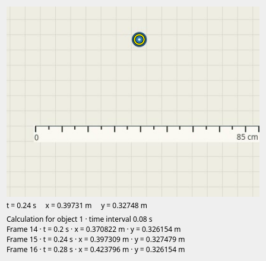

In the classroom
Prepare the recording, guide the marking and discuss the results with the class
From a measurement to a model
Choose the question before choosing a graph. “Where does the ball reach the top of its flight?” can be explored with y(t) or vy(t). “What motion would a passenger on the first cart see?” calls for tracking both carts and choosing the first as the reference frame under Trajectories.
- Free fall
chute_libre.mp4· 60 frames/s With the vertical axis pointing up, what sign will the acceleration have?
Compare the slope of vy(t) with the direction of the fall.
- Projectile motion
lancer_parabolique.mp4· 60 frames/s Which components of velocity are still visible at the highest point?
Locate the maximum of y(t), then read vx and vy around that time.
- Two carts
deux_chariots_uniformes.mp4· 30 frames/s How does the separation between the carts change?
Compare x₂ − x₁ with the position of the second cart in the first cart’s frame.
- Simple pendulum
pendule_simple.mp4· 30 frames/s Where is the pendulum moving fastest?
Match the peaks in speed v with the corresponding frames.
The four films are in mevcine/exemples/ in the source tree. Copy the chosen film into the folder supplied to students. The same investigation also works with footage recorded in class.
A marking and graph-reading lesson
- Before marking. Identify the object, the feature to mark and the plane of the scale. Ask students to sketch the axes and predict the sign of vy as the ball rises and falls.
- During measurement. Mark about ten frames around the top of a throw. Each pair records the capture rate, reference length and number of the first frame used.
- From table to graph. Plot y(t), then vy(t). Click a velocity point. At a constant frame rate, work out the vertical displacement between the two outer frames and divide it by the time between them.
- Discuss discrepancies. Compare two runs on the same recording. A common factor in every distance suggests checking the scale. For one surprising acceleration, inspect the three positions used to calculate it. A common factor in the velocities also warrants checking the capture rate of slow-motion footage.
- Lab report. Ask for a graph with labelled axes and units, one measurement checked against the film, its calculation and a conclusion addressing the original question. Keep the project with the recording so another group can review the marks.


Deploying MeVCine in a computer room
- On Windows, two versions (see Installing): the portable version, a folder to copy onto a USB stick, a network folder or the disk of each computer, with no installation and no administrator rights; or the installer, for all the users of the computer, which can be deployed with no question (WAPT, GPO). Preferences and the automatic backup are stored in the student's account.
- A shortcut for the students: to
mevcine.exe --simple(ormevcine --simple), to always open simple mode; without this option, MeVCine takes the mode used last time, which a student may have changed (and on the first launch of each account, it asks for the mode). A video can be added:mevcine.exe --simple \\server\physics\fall.mp4. - Shared computers: MeVCine never reopens the last video; every student starts from a clean screen. The language, the theme, the mode, the unit of the reference, the window size and the last video folder are remembered per account. Each session has a separate backup. On a shared account, Recover previous work… can list several students’ backups. Choose the session by video name and modification date.
- A configuration folder for each account: the
MEVCINE_CONFvariable (in a.batlauncher, for instance) points to another folder, on the stick or the network. See Settings. - On first launch, Windows reports an unsigned program (More info › Run anyway): warn the students, or do this first launch yourself on each computer.
Before class, check that a student account can write to its project folder. On shared computers, give each student or group a separate folder for its own work and video.
Contact, languages, contributing
MeVCine is written by Rémi MEVAERE:
suite@sciences-physiques.net. A remark, a video that does not open,
an idea for the classroom: write, attaching if possible the error log, mevcine.log
(Settings), and the video.
The interface and the user guide exist in French and English. The translations are gettext files
(data/lang/*.po, editable with Poedit); the user guide is made of HTML pages (aide/language/,
assembled by scripts/site-aide.py). The code is in C++ with Qt; the README.md file explains
how to build it and run the tests.
Licence
MeVCine is free software, under the GNU GPL version 3 or later: you may copy it, hand it out to
students and modify it freely. It includes open-source components (Qt, FFmpeg…): Help › About MeVCine…
lists them, with their licences, and gives the path of the settings file; Help › About Qt… gives the licence
of Qt. On Windows, the licences folder of the program holds the licences of the shipped libraries, and
ffmpeg/LICENSE.txt that of ffmpeg.